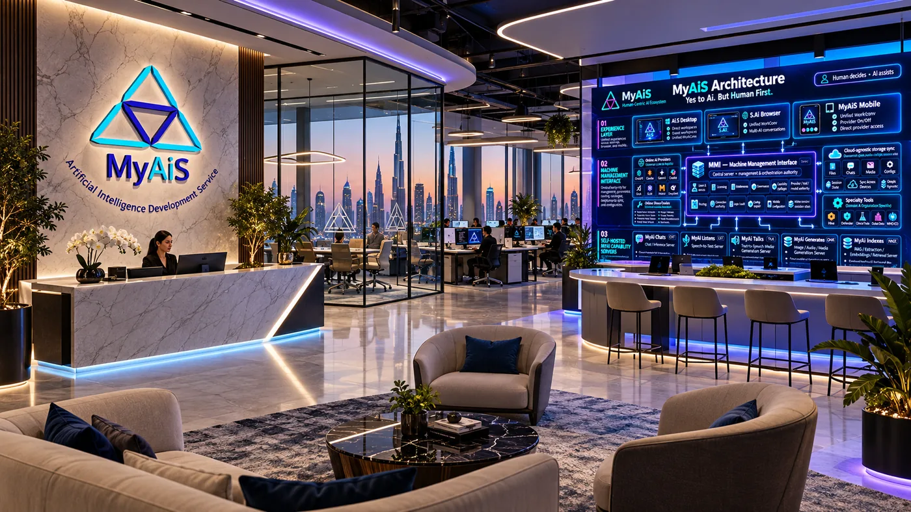

One connected ecosystem · Built in the UAE
One human.
Many Ais.
Real work.
Work with different Ais, tools, computers and knowledge in one human-governed environment. Keep your choices, context and decisions where they belong: with you.
Yes to Ai. But Human First.
MyAiS · One conversationHuman in control
YOUR REQUESTHelp me examine this decision from different perspectives.
3 Ais participatingOne place to compare
✧ Many perspectives. Your final decision.
Multiple Providers
One human-led workflow
DesktopBrowserMobilePrivate serversCloud-connected continuity
01 / Why MyAiS exists
It began with a very human frustration.
In June 2026, the founder was tired of copying answers between separate Ai applications just to compare their thinking. There was no single place that worked the way he wanted—so he began building one, with the help of Ai.
01⇄Too much copying and pasting
Several Ais. Separate conversations. Fragmented comparisons.
→
02◎One prompt. Different perspectives.
Ai.S let multiple Advisors contribute in one coordinated meeting.
→
03✳An ecosystem for real work.
Desktop, browser, Mobile, shared continuity and private MyAi services.
“Ai should give people more ways to think, create and decide—not take those decisions away.
Human decides · Ai assists
02 / The experiences
Different ways to work.
One underlying ecosystem.
Each application has a distinct purpose. They are not interchangeable screens for the same chat application.
▣Desktop application
Ai.S
The collaboration and meeting environment
Compare Advisors in parallel or in sequence; build projects, run discussions, preserve decisions and bring tools into your work.
- Fast / Deep Advisor collaboration
- Ai.Secretary and evidence-linked minutes
- Ai.S Calendar and meeting continuity
- Studio, ComfyUI paths and Speciality Tools
- Direct, Guest and Unified workspaces
◉Browser application
S.Ai
The conversation and computer-work environment
Hold multi-Ai conversations, work with files and let authorised Ais assist with real computer tasks while the human supervises.
- Multiple Ais in one conversation
- Separate working-file Workspace
- Computer View: browser, apps and desktop
- Human takeover, STOP and action evidence
- Unified WorkConv cloud continuity
▤Android application
MyAiS Mobile
The direct Provider and on-the-go experience
Speak directly with selected online Ai Providers on Android, using an MMI-issued user configuration and local conversation storage.
- Direct online Provider connections
- Provider ON/OFF choice
- User-generated, protected MMI configuration
- Local Unified WorkConv conversations
- Offline-friendly background cloud sync planned
04 / Self-hosted capability family
Six independent MyAi services.
Each server owns a specialised role, its compatible engines and its own administration. Available hardware determines which resources can be installed and proven—not the overall product's ceiling.
◌CHT · 8201
MyAi Chats
Self-hosted conversational inference, model management, streaming and evidence of supported execution capabilities.
≋LST · 8301
MyAi Listens
Speech-to-text, real-time recognition, batch transcription and supported recording analysis.
◖TLK · 8401
MyAi Talks
Voice synthesis, speech profiles, incremental audio streaming and interruption handling.
◇GNR · 8501
MyAi Generates
Creative media workflows, image generation, job control and ComfyUI-backed Studio heritage.
▤NDX · 8601
MyAi Indexes
Document extraction, embeddings, searchable indexes and traceable evidence retrieval.
✧KNW · 8701
MyAi Knows NoVa
Private knowledge continuity: sources, persistent memory, relationships, corrections and evidence-grounded answers.
Designed for different environments.From a single capable workstation to larger private deployments. Some role-server engines and integrations still require configuration, testing or acceptance.
05 / Keep the work, not just the conversation
Your work should move with you.
Unified WorkConv provides a shared conversation and file structure for Ai.S, S.Ai and Mobile. The target is a familiar cloud-sync experience: keep working locally while authorized changes synchronize in the background.
Work locallyPreserve contextSync safelyContinue anywhere
Current status: S.Ai ↔ OneDrive synchronization has been demonstrated. Mobile's robust background two-way sync and full three-application interoperability are still being completed.
☁Unified WorkConvShared conversation + files
Ai.SS.AiMobile
Offline continuity and conflict-safe cloud sync are target capabilities
06 / For people and organisations
A real problem at every scale.
The value isn't simply having more Ai models. It's being able to choose them, compare their perspectives, connect their capabilities to real work and govern information access.
01Individuals & professionals
One place to work with multiple Ais, compare responses and preserve useful conversations, documents and decisions.
02Teams & growing companies
Managed access to Providers, services and work environments—with policies, licensing, repeatable workflows and accountable actions.
03Private & regulated environments
Deploy compatible models on infrastructure under an organisation's control; choose which services may connect outside and validate boundaries.
04Research & knowledge-heavy work
Explore evidence from approved sources, preserve historical context and use specialised knowledge capabilities when configured and authorised.
Private hosting and Governance features support customer data-control choices. Regulatory compliance, security certification and deployment-specific privacy outcomes require independent assessment.
07 / Built, working and still evolving
Actual software. Honest progress.
MyAiS is a founder-developed, pre-revenue software suite. Several parts run today in the founder's local environment; integration and commercial deployment work continue.
Already demonstrated locally
- S.Ai multi-Ai conversations in a running browser
- MMI administration and central catalogues
- S.Ai Unified WorkConv folders on OneDrive
- MyAiS Mobile conversations using direct Providers
- Individual MyAi server UIs, with differing readiness levels
Still being integrated and validated
- Ai.S V7 migration to central MMI
- Six server-role binding and operation dispatch to MMI 8100
- Mobile's durable, safe background cloud synchronization
- KNW full model, retrieval and knowledge configuration
- Repeatable customer installs, security testing and commercial readiness
Not a concept on paper.Not yet a finished commercial deployment, either. We prefer showing real software and stating clearly what comes next.

Future headquarters concept · not an existing office08 / The next chapter
From founder-built software to a company that can deliver it.
Our next objective is to complete integration, make deployments repeatable, establish support and validation, and demonstrate the value to real organisations.
The ambition is global. The evidence starts with careful engineering, honest demonstrations and real customers.
Discuss partnerships or a demonstration ↗